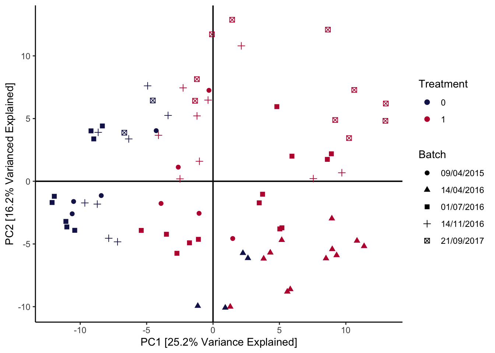

This example is about simultaneously analyzing several batches in a dataset about the efficiency of anaerobic digestion (AD) of organic matter. The essential problem is that, in this study, the samples could not be collected simultaneously. Small differences across separate runs could lead to systematic differences in the resulting data, which can obfuscate the more interesting between-group variation that the experiment was intended to uncover. For example, in the AD dataset, the date of the sequencing run has a global effect on measured community composition, which we can see right away from a principal components plot:
data(anaerobic)
pca_batch(anaerobic, facet = FALSE) +
scale_color_manual(values = c("#191C59", "#bc0c3c")) +
labs(
col = "Treatment",
shape = "Batch",
x = "PC1 [25.2% Variance Explained]",
y = "PC2 [16.2% Varianced Explained]"
)
You can learn more about the general microbiome batch effect integration problem in (Wang and Le Cao, 2020), which is where this dataset example and the batch effect correction code below comes from. The article also reviews mechanisms that could lead to batch effects in microbiome data, together with methods for removing these effects and the situations within which they are most appropriate.
In batch effect correction, it’s important to remove as much of the batch variation as possible without accidentally also removing the real biological variation that would have been present even if all the samples had been sequenced together. This is sometimes called ``overintegration,’’ and this is an especially high risk if some of the real biological variation is quite subtle, e.g., a rare cell type or one that is very similar to a more prominent one. Simulation can help us gauge the extent to which different methods may or may not overintegrate. Since we get to control the between-batch and and between-biological-condition differences, we can see the extent to which integration methods can remove the former while preserving the latter.